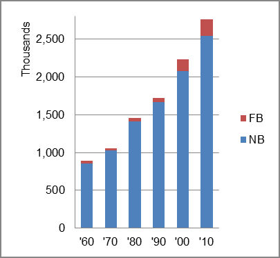
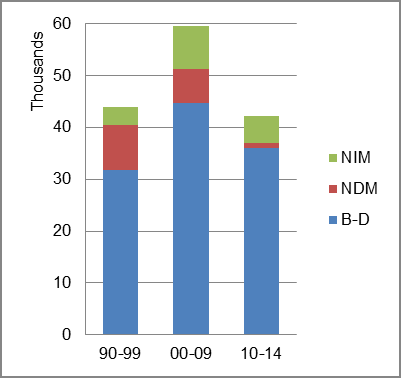
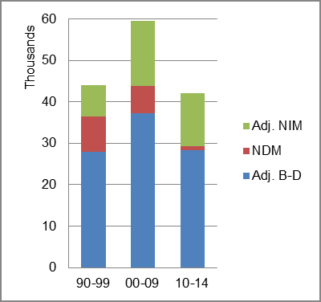

The foreign-born (FB) population increased from 32,133 in 1960 to 222,638 in 2010. That was an increase of 592.9 percent. The foreign-born share increased from 3.6 percent in 1960 to 8.1 percent in 2010.
The share of the overall population that was native-born (NB) increased by 196.0 percent.
Utah: Population 1960-2010 
The first chart below shows the three population change factors for three periods adjusted for annual average amounts. The largest factor adding population in all periods was B-D.
The second chart shows the same data but with an adjustment to reflect births to immigrants shifted to NIM. In it, B-D still accounted for a majority of added population, while NIM replaced NDM as the second largest contributor to population increase.
Utah: Sources of Population Change 1990-2014 Utah: Sources of Population Change (Adjusted) 1990-2014  
B-D NDM NIM B-D NDM NIM 90-'99 72.4% 19.5% 8.1% 90-'99 63.5% 19.5% 17.0% 00-'09 75.0% 11.1% 13.9% 00-'09 62.7% 11.1% 26.3% 10-'14 85.7% 2.1% 12.2% 10-'14 67.4% 2.1% 30.5%